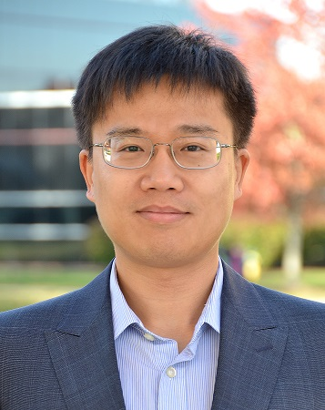

About
Overview
The Center for Artificial Intelligence for Law brings together researchers in artificial intelligence, law, public policy, business and social science to study the reliability, governance and application of AI in legal and other high-stakes professional settings. Starting from practical problems in legal reasoning, evidence verification and professional decision-making, the Center connects technical research with institutional analysis.
Legal tasks require AI to interpret rules, handle exceptions, verify sources and explain conclusions, providing an important setting for studying reasoning capabilities and model limitations. Through interdisciplinary research on large language models, trustworthy evaluation and human–AI collaboration, the Center explores how AI can support professional judgment while remaining open to effective oversight, challenge and correction.
Grounded in Hong Kong’s bilingual common-law environment, the Center addresses needs across the Greater Bay Area and different jurisdictions, developing methods and empirical evidence that connect technical innovation, professional practice and public governance.
Mission
Advance trustworthy AI research through legal and regulatory questions, translating research evidence into improvements in professional practice, interdisciplinary education and public governance.
Approach
Define the problem: start from legal reasoning, evidence verification and professional decisions to identify capability boundaries and institutional needs worth investigating.
Build and evaluate: develop research prototypes, benchmarks and verification methods that make AI performance, limitations and failures observable and testable.
Connect with practice: bring professional experience into technical research through dialogue with legal, policy and industry practitioners.
Governance
Director, CAIL
Sirui Han
Associate Director, CAIL
Yangqiu SongCenter Steering Committee
Strategic oversight.
Yike Guo · Xiaofang Zhou · Céline Yunya Song · Ping Li · Huamin Qu
Executive Committee
Strategic decisions and implementation.
Research and Assurance Panel
Research quality support.
Core Office
Day-to-day coordination and administration.
External Advisory Board
Strategic advice and resource development; three to five external and HKUST members, with the chair to be appointed by VPRDO.
HKUST Legal Office
Provides practitioner input and product feedback as needed. Legal Office colleagues and senior lawyers may join Steering Committee meetings on relevant legal-industry issues.
CAIL undertakes research, evaluation and training and provides evidence from pilot projects. Legal opinions, institutional approvals, risk acceptance and external commitments remain with authorized University offices.
People